FlexBox
Los elementos Flex están compuestos por dos partes: el flex-container, el cual es el elemento padre que contiene a los flex-item, los cuales son los elementos hijos que se encuentran en su interior. En sí, los contenedores flex, en cuanto a otros elementos externos se trata, se comportan como un elemento de block; sin embargo, las verdaderas particularidades de este valor de display se encuentran en el comportamiento de los "items" dentro de dicho contenedor.
Para definir un contenedor flex simplemente es necesario declararlo como tal:
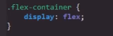
Una vez el contenedor es declarado flex puede acceder a diversas propiedades, entre las cuales se encuentra la adquisición de dos "ejes" internos llamados "main axis" y "cross axis", los cuales en sí no se tratan de dos ejes en todo el sentido de la palabra, ya que cuentan con la particularidad de poseer una orientación:
-
Main Axis: Se trata del equivalente del eje X de un mapa cartesiano, se encuentra direccionado de izquierda a derecha poseyendo a su vez las secciones de main-start y main-end
-
Cross Axis: Se trata del equivalente del eje Y de un mapa cartesiano y se encuentra direccionado de arriba hacia abajo poseyendo a su vez las secciones de cross-start y cross-end
Ejemplo
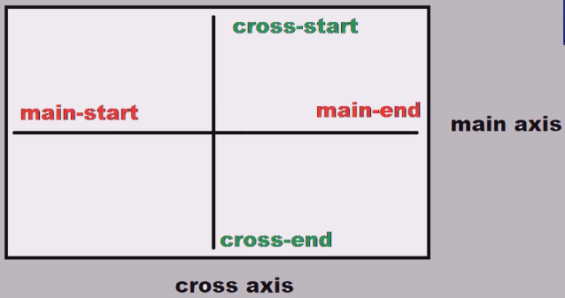
Estas serán las direcciones por defecto a la hora de trabajar con flexBox.
Nota: una de las características de flexBox es que los elementos flex únicamente son el contenedor y sus hijos directos, por lo que el elemento hijo de un elemento hijo ya no forma parte del flexBox.
Comportamiento
Al definir un contenedor como display: flex; automáticamente este se comportará como un elemento de bloque para los elementos externos, mientras que sus items se alinearán uno junto a otro pero con la particularidad de que las dimensiones de estos mantendrán una concordancia entre sí, y para lograrlo los items ajustarán su alto y ancho junto a su contenido de modo que todos los items coincidan. En el caso de que se defina un height o un width los items se ajustarán a este, pero si hay más items de los que caben en pantalla entonces estos modificarán sus dimensiones de forma que todos puedan visualizarse en pantalla; este es el comportamiento por defecto de flex con el cual se puede lograr efectos como estos:
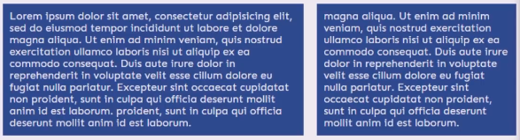
En este ejemplo se encuentran dos flex-items que a pesar de la considerable diferencia en su contenido estos mantienen una misma altitud. Este comportamiento se aplicará a todos los items flex, siempre y cuando su comportamiento por defecto esté activado.
Propiedades del contenedor
Se tratan de aquellas propiedades que se deben aplicar al contenedor pero su efecto modificará el comportamiento de los items en su interior, estas son:
Flex-Direction
-
Esta propiedad permite definir la posición en la que se organizarán los items, es decir modifica la forma en la que estos se organizan en el main-axis o el cross-axis. Debido a que existen diversas formas de organizar los elementos, la propiedad tiene múltiples valores posibles:
-
Row: Se trata del valor por defecto de flex, este es el que define que todos los items se organicen en fila, es decir, a lo largo del main-axis (eje X).
Código
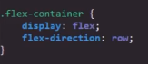
Resultado
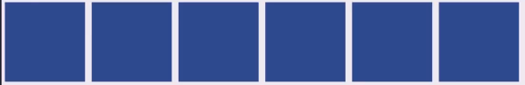
-
Row-reverse: El efecto de este valor es invertir el orden de los elementos del valor row, es decir, por defecto los items se organizarán de main-start a main-end (izquierda a derecha); con este valor lo harán empezando por el main-end hacia main-start (derecha a izquierda), por lo que el eje de los elementos no se modifica pero sí lo hace su dirección.
Ejemplo
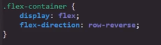
-
Column: Este valor define que todos los items se organicen en columna, es decir, a lo largo del cross-axis (eje Y).
Código
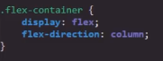
Resultado
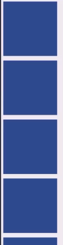
-
Column-reverse: El efecto de este valor es invertir el orden de los elementos del valor column, es decir, por defecto los items se organizarán de cross-start a cross-end (arriba a abajo); con este valor lo harán empezando por el cross-end hacia cross-start (de abajo a arriba), por lo que el eje de los elementos no se modifica pero sí lo hace su dirección.
Ejemplo
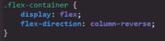
Flex-Wrap
-
El efecto de esta propiedad es indicar al navegador cómo redistribuir los items para los casos en que las dimensiones de pantalla sean inferiores a las necesarias para mostrar los items en las direcciones definidas por flex-direction. En otras palabras, si la pantalla no cuenta con las dimensiones para mostrar los items con su width y height definidos, esta propiedad lo que hace es no permitir que se modifiquen las dimensiones del item; en su lugar lo reubica en otra zona de la pantalla. Esta propiedad cuenta con tres valores los cuales son:
-
Wrap: Este es el valor por defecto de la propiedad cuando está activada, su efecto es el de reubicar los items en una fila inferior a la actual cuando el espacio en pantalla sea inferior al necesario para mostrar a todos. De este modo no permite que la propiedad flex modifique las dimensiones de los items; en su lugar los reubica en la fila siguiente.
Código
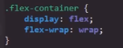
Resultado
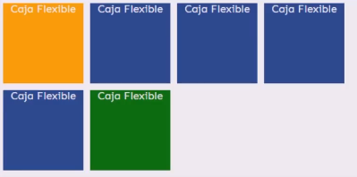
-
Wrap-reverse: Este valor invierte la posición en la que se reubican los items: en vez de ubicarlos en una fila inferior lo hace en una fila superior a la actual.
Código
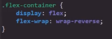
Resultado
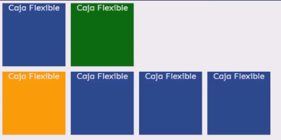
-
Nowrap: Este es el último valor posible, y es el valor por defecto en los elementos; simplemente indica que la propiedad está desactivada, por lo tanto no se deben reubicar los items en pantalla.
Ejemplo
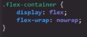
flex-flow
-
Esta propiedad es muy simple: se trata de la propiedad de abreviatura de flex-direction y de flex-wrap. Su función simplemente es acortar el código CSS definiendo ambas propiedades en una sola de la siguiente manera:
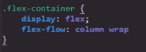
En sí no ofrece ningún otro efecto más allá de este, e incluso su uso se recomienda limitarlo a los casos en los que realmente sea necesario definir en flex-direction y flex-wrap un valor diferente al seleccionado por defecto, ya que de lo contrario realmente no sale a cuenta su uso.
Justify-content
-
Esta propiedad define la forma en la que se alinean los diferentes items de un contenedor dentro del main axis; para esto cuenta con diversos valores:
-
Center: Este valor define que todos los elementos se junten en el centro de la pantalla
Código
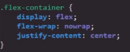
Resultado
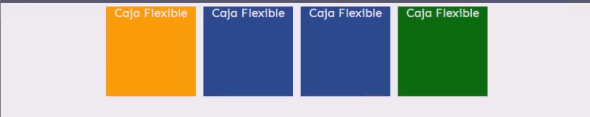
-
Space-around: Este valor define que se distribuirá el espacio disponible de forma equitativa alrededor de todos los elementos.
Código
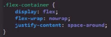
Resultado
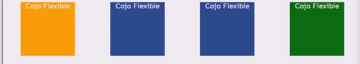
Su efecto puede ser parecido al de margin: auto; sin embargo el uso de esta propiedad es más conveniente no solo porque engona mejor con las demás propiedades flex sino que de este modo también se mantiene la propiedad margin libre para su uso en los items si es necesario.
Nota: Entre los items se encuentra más espacio que en los bordes ya que allí se unen el espacio correspondiente a cada item; es muy similar a cuando se aplica un margen, es decir, los márgenes de ambos elementos se distancian entre sí aumentando el espacio entre los elementos.
-
Space-between: Este valor deja la mayor cantidad de espacio disponible entre los items
Código
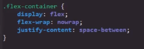
Resultado
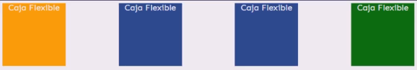
-
Space-evenly: Este valor deja la misma cantidad de espacio alrededor de cada item sin importar si este se encuentra entre dos items o si se encuentra en alguno de los extremos; siempre será la misma distancia.
Código
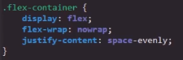
Resultado
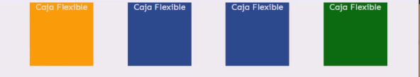
Align-items
-
Esta propiedad define la forma en la que se alinean los items dentro del cross axis, para lo cual posee diversos valores.
Nota: esta propiedad únicamente se utiliza cuando solo existe una única fila de items.
-
Center: Tal como su nombre lo indica, este valor centra los elementos dentro del cross axis, es decir, centra los elementos verticalmente.
Código
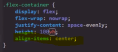
Resultado
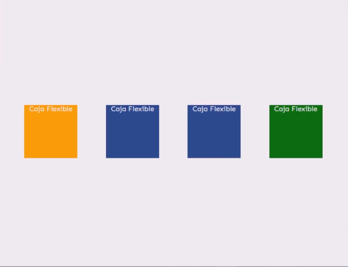
-
Flex-end: Este valor ubica los items en la zona inferior del contenedor, es decir, envía al fondo a los items del contenedor.
Código
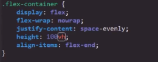
Resultado
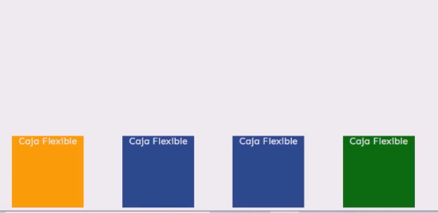
-
flex-start: Este valor ubica a los items en la zona superior del contenedor.
Ejemplo
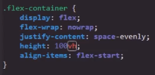
-
Stretch: Este valor ubica los items al comienzo del contenedor pero con la particularidad de que estira los items a lo alto de todo el contenedor, para que de ese modo estos cubran todo el espacio disponible en el cross axis.
Código
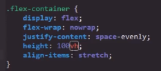
Resultado
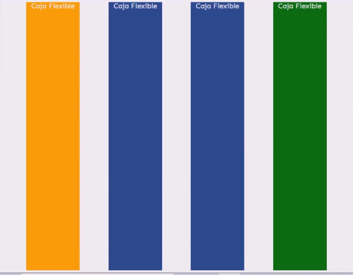
-
Baseline: Se trata de un valor que realmente tiene poco uso ya que no aporta nada relevante que no aporten los otros; sin embargo, un buen uso para este es para cuando se desea lograr que los items ubicados en fila se reubiquen hacia una fila superior; para esto se utiliza flex-wrap: wrap-reverse; en conjunto con align-items: baseline; para lograrlo. Fuera de este efecto en particular, el valor baseline escasea en su uso.
Align-content
-
Para estos casos se utiliza align-content cuyo efecto es reubicar a los items en la siguiente fila inmediata junto a la actual. En otras palabras, Align-content es una propiedad cuya función y valores son idénticos a los de align-items, con la diferencia de que al existir múltiples filas de items esta propiedad las mantiene ordenadas justo debajo (o encima) de la fila actual:
Código
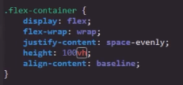
Resultado
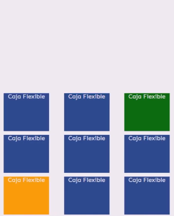
A diferencia de Align-items, ya que esta al encontrar más de una fila de items los distribuye de forma uniforme a lo largo de todo el espacio disponible:
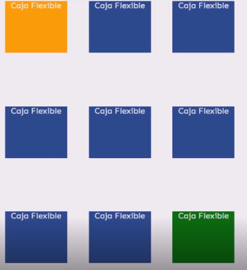
Al tratarse de una propiedad tremendamente parecida a align-items cuenta con los mismos valores y efectos que esta, solo que con la particularidad de poder controlar mejor múltiples filas de elementos. Los valores de esta propiedad son:
Center
Flex-end
flex-start
Stretch
Baseline
Nota: ya que los efectos de sus valores son los mismos no es necesario volver a explicarlos.
Propiedades de los items
Se tratan de aquellas propiedades que se aplican directamente al flex item.
Align-self
-
Esta propiedad es exactamente como align-items o align-content, ya que la función de esta propiedad es definir una alineación únicamente para alguno de los items en particular; por ello es que se le define a dicho elemento. En sí, esta propiedad permite el desplazamiento del item a lo largo del cross axis, y sus valores son idénticos a los de align-items y align-content.
Center
Flex-end
flex-start
Stretch
Baseline
Ejemplo
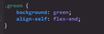
Margin
-
Los elementos flex cuentan con una particularidad en el comportamiento de la propiedad margin, específicamente cuando se aplica el valor auto, ya que en estos casos por defecto el navegador dejará todo el espacio disponible en la dirección en la que se le está aplicando el margen; es decir, si se define la propiedad margin-top: auto en el item, este se desplazará a la parte inferior del contenedor, ya que el valor auto en un elemento flex dará el margen máximo posible en la dirección que indique la propiedad.
Código
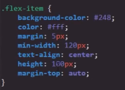
Resultado
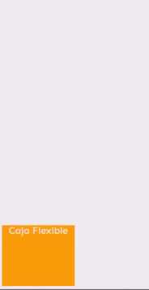
De este modo es posible centrar el item vertical u horizontalmente utilizando dos propiedades margin: auto del mismo eje (margin-left y margin-right o margin-top y margin-bottom); esto ya que al entrar en conflicto dos propiedades margin: auto en el mismo eje, el navegador lo resuelve dejando la mitad del espacio disponible a cada cara del item. Otra opción es generalizar el valor auto al margen de todas las caras del item para ubicarlo en el centro de todo el contenedor de la siguiente forma:
Código
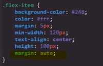
Resultado
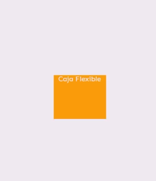
Nota: También es posible aplicar la abreviatura de la propiedad de la siguiente forma:
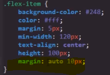
Nota: este comportamiento es particular de los items dentro de contenedores flex; fuera de estos la propiedad margin se comporta con normalidad.
Flex-grow
-
Esta propiedad define que todo el espacio sobrante en el contenedor se distribuya entre los items de este; es decir, las dimensiones de los items se modificarán en función del espacio disponible en el contenedor. Si el espacio aumenta, los items se agrandarán o reducirán para ocupar ese espacio.
Código
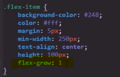
Resultado
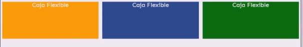
En este ejemplo los items tienen definido un height: 100px, pero al aplicarse la propiedad flex-grow: 1 los items se agrandan para abarcar ese espacio. Lo que en realidad no permite la propiedad height es que el item se reduzca a un tamaño inferior a esos 100px que tiene definidos; por lo tanto, al definirse una propiedad de dimensiones en un item con flex-grow, este elemento modificará sus dimensiones en función del espacio disponible, pero nunca se reducirá a un tamaño inferior al definido en sus propiedades de dimensiones.
De este mismo modo se puede aplicar esta propiedad a algunos items y a otros no; el resultado es que solo aquellos que posean la propiedad dispondrán del espacio sobrante, de la siguiente forma:
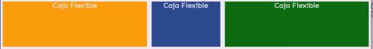
Por último, es posible definir la cantidad de espacio que se le asignará a cada item. Esto se define con el valor numérico que se asigne a la propiedad, ya que el espacio sobrante se divide por la suma de todos los números que se asignen en todas las propiedades flex-grow del flexbox de la siguiente manera:
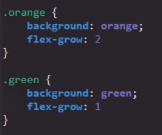
En este ejemplo lo que sucede es que el espacio sobrante se divide en tres (3), ya que este es el valor de la suma de todas las propiedades flex-grow, en el cual dos (2) corresponden a la clase ".orange" y uno (1) corresponde a la clase ".green"; por lo tanto, el espacio se divide en tres secciones de las cuales dos (2) le corresponden a ".orange" y una (1) le corresponde a ".green", de la siguiente forma:
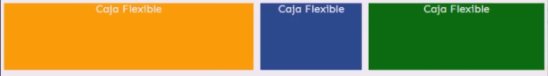
Nota: Esta propiedad acepta decimales.
Flex-shrink
-
Esta propiedad lo que define es la cantidad de espacio que cederá cada item para ajustarse a las medidas de la pantalla; es decir, esta propiedad define si alguno de los items tendrá que ceder una cantidad de espacio mayor o igual de espacio que otro a medida que la pantalla se reduce.
Para esto se asigna un valor numérico el cual define la cantidad de veces que un item reducirá su espacio; es decir, un item con, por ejemplo, un valor de tres (3) tendrá que ceder tres (3) veces más espacio que aquel item que posea un valor de uno (1).
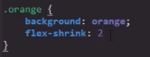
En otras palabras, el valor numérico define la cantidad de porciones de espacio que el elemento tendrá que ceder, por lo que si se define con "0" ese item no cederá nada de espacio una vez el item alcance su width definido.
Nota: Esta propiedad acepta decimales.
Nota: Esta propiedad tiende al infinito; eso quiere decir que se puede definir con un valor de "0" seguido de 10 decimales y de igual forma el navegador lo tendrá en cuenta.
Flex-basis
-
Esta propiedad es exclusiva de flexbox; su función es idéntica a la de la propiedad width, con la diferencia de que cuenta con más prioridad que esta, por lo que en el caso de que el navegador tenga que elegir las dimensiones de un item entre estas dos propiedades siempre elegirá el flex-basis; a su vez width nunca podrá sobreescribir a flex-basis.
Ejemplo
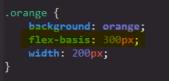
Su uso es más recomendable que width ya que se trata de una propiedad específica para las flexbox, cuenta con una mayor jerarquía que esta y también tiene la opción de ser combinada con otras propiedades.
Flex
-
Se trata de la propiedad de abreviatura de flex-grow, flex-shrink y flex-basis; por lo tanto la única función de esta propiedad es la de reducir y optimizar el código CSS. La estructura de esta dicta que:
El primer valor corresponde a flex-grow
El segundo valor corresponde a flex-shrink
El tercer valor corresponde a flex-basis
Ejemplo
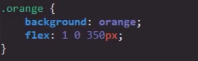
Nota: Para funcionar esta propiedad necesita obligatoriamente al menos un parámetro (el primero corresponde a flex-grow).
Order
-
Esta propiedad se asemeja mucho al z-index, propiedad que define qué elemento se visualizará por encima o por debajo cuando estos se sobreponen entre sí; esto lo hace en base al valor numérico que se le asigna a cada elemento, en el cual el más grande se ubica por encima de los otros.
Por su lado order lo que hace es definir en qué orden se ubican los elementos en base a la dirección del main axis; es decir, esta propiedad define si los items se ubican de primero, segundo, cuarto, último, etc., en base al valor numérico que se le asigne a cada item al igual que en la propiedad z-index. En esta propiedad el item con el menor valor se ubica en el inicio del main axis, mientras que el item con el mayor valor lo hace en el final del main axis. Esto es indiferente de si los items tienen una flex-direction: row; o una flex-direction: column; (Si se utiliza "column" entonces los items pasan a organizarse en el cross axis).
Código
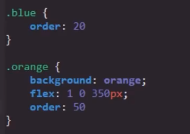
Row
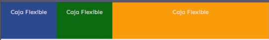
Column
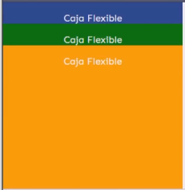
Nota: Recordar que los valores row-reverse y column-reverse invierten los ejes, por lo que con estos valores los items se organizarán en función a las nuevas direcciones de los ejes.